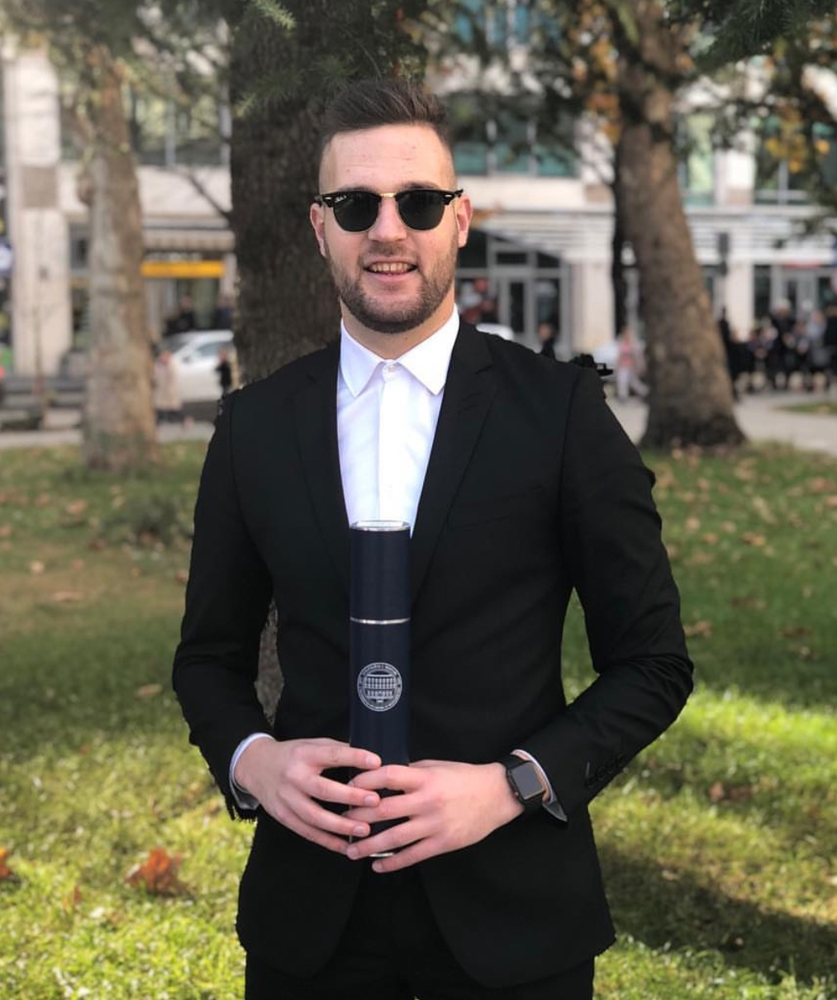

 FRANJO SKOKO
PERSONAL DETAILS
Datum rođenja: 05.01.1995
Mjesto rođenja: Leonberg, Njemačka
Naciolanost: Hrvat
Vozačka dozvola: B kategorija
Kontakt podaci: Link
EDUCATION
Magistar (Master) Ekonomije
Jednogodišnji diplomski studij
Računovodstvo i financije
Ekonomski fakultet Sveučilišta u Mostaru
Oct 2017 - Oct 2018
Studentska razmjena u Francuskoj
Sciences Sociales Université de Poitiers
Oct 2017 - Dec 2017
Prvostupnik (Bachelor) Ekonomije
Preddiplomski studij
Računovodstvo i financije
Ekonomski fakultet Sveučilišta u Mostaru
Sep 2013 - Sep 2017
Srednja škola
Gimnazija fra Dominika Mandića Široki Brijeg
Sep 2009 - May 2013
Osnovna škola
Druga osnovna škola Široki Brijeg
Sep 2001 - Jun 2009
EMPLOYMENT
Brand Manager - BLANCO Gmbh
Kovinoplast d.o.o. Široki Brijeg
July 2019 - Present
- kreiranje plana i programa brenda
- usuglašavanje budžeta na godišnjoj razini
- izrada i implementacija marketing plana
- priprema i slanje narudžbe na dogovorenoj tjednoj razini
- kalkulacija i zaprimanje robe prilikom isporuke
- održavanje postojećih i akvizicija novih kupaca
- administracija web stranice i društvenih mreža
- analitičko praćenje nabave, prodaje i planiranje budućih koraka
Sales Manager - Renaul Nissan Dacia
GUMA M d.o.o. Mostar
Oct 2018 - Jun 2019
- izrada strategije flotne prodaje
- obilazak postojećih i akvizicija novih kupaca
- prezentacija ponude proizvoda i usluga
- sklapanje ugovora o prodaji vozila
- suradnja sa osiguravajućim i leasing društvima
- izvještavanje o obavljenim aktivnostima
Work and Travel Program
The Sagamore Resort Bolton Landing, SAD
May 2018 - Sep 2018
- održavanje golf terena
- server na vjenčanjima i zabavama
Student Job
Raiffeisen Bank
Sep 2019 - Oct 2019
- rad pod mentorstvom
- administrativni poslovi
- aktivnosti u registru
Summer Job - Revision
REVIZIJA d.o.o. Široki Brijeg
Jul 2017 - Aug 2017
- rad pod mentorstvom
- upoznavanje s poslovanjem
- pregledavanje izvještaja i mišljena
Job in production - Feal d.o.o.
FEAL d.o.o. Široki Brijeg
Jun 2016 - Sep 2016
- vožnja viljuškara
- upravljanje kranom
- slaganje i vezanje profila
ACHIEVMENTS
- REKTOROVA NAGRADA ZA OPĆI USPJEH U AKADEMSKOJ 2016./2017
- DEKANOVA NAGARA ZA OPĆI USPJEH U AKADEMSKOJ 2016./2017
- DRUGO MJESTO NA ZABA 'Case Study Competition Zagreb 2018.
- TREĆE MJESTO NA 'Ožujsko studentski natječaj 2017.
- NAGRADA ZA NAJBOLJI PR NA PROJEKTU 'E4U 2018
- SUDJELOVANJE NA 'UniCredit Case Competition Event 2018.